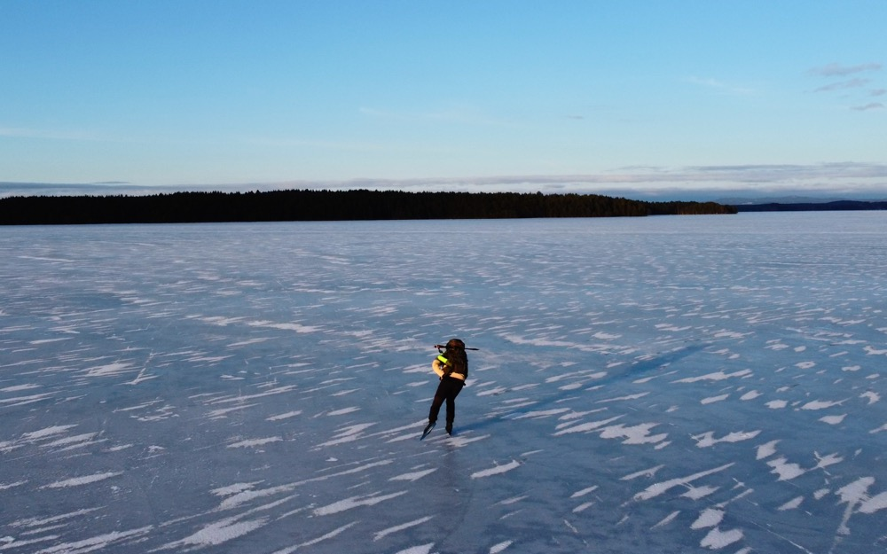
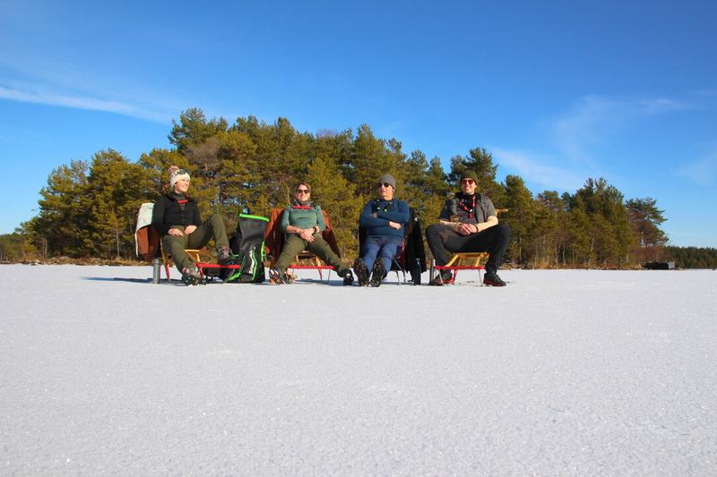
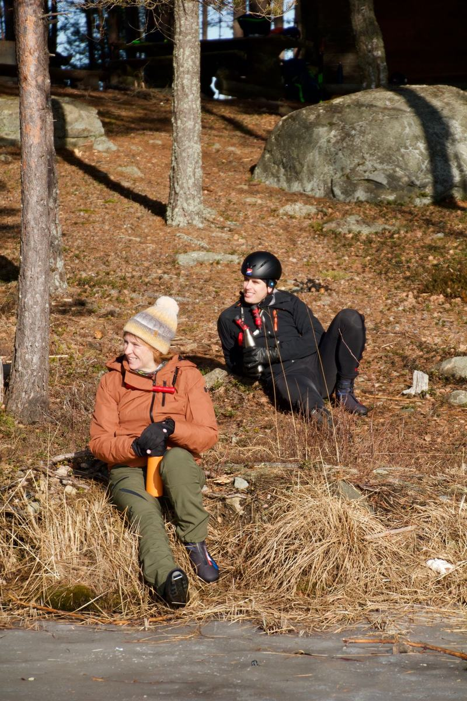
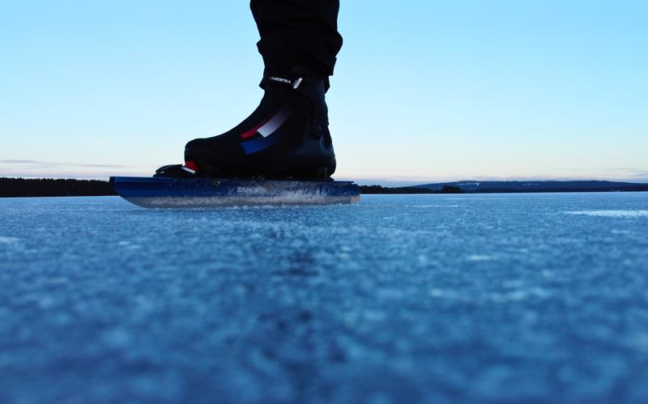
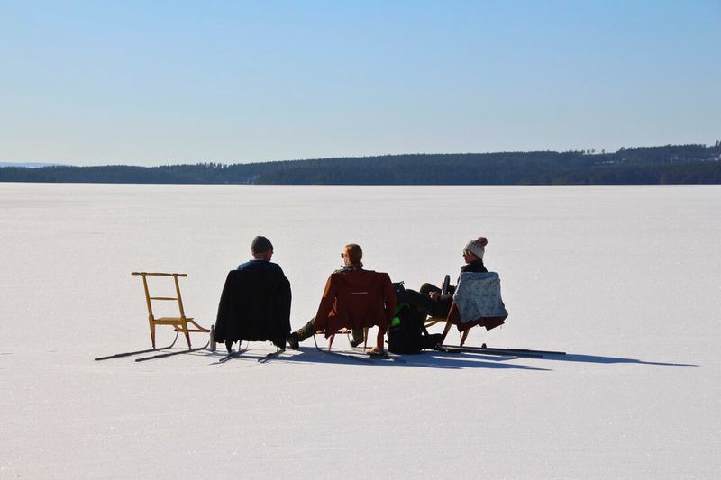
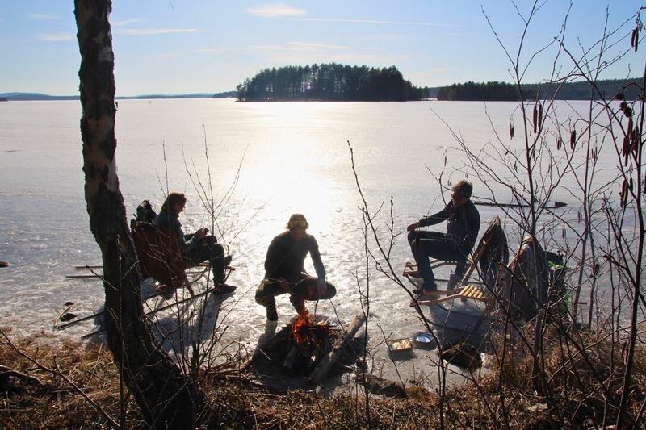
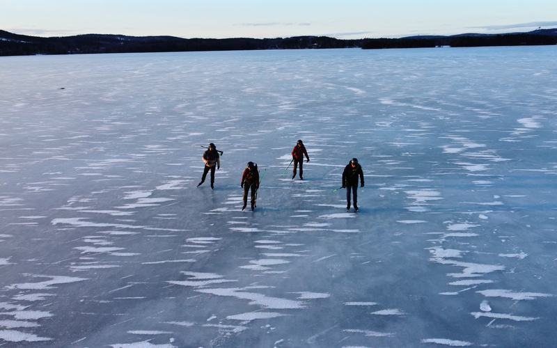
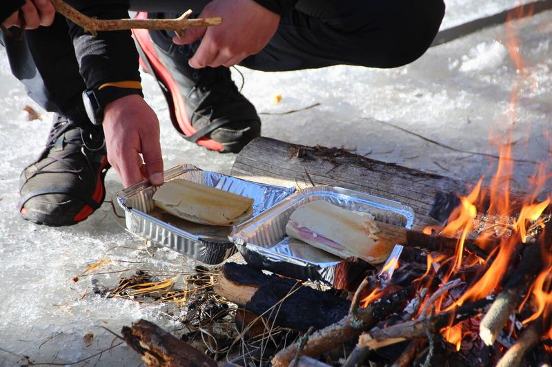
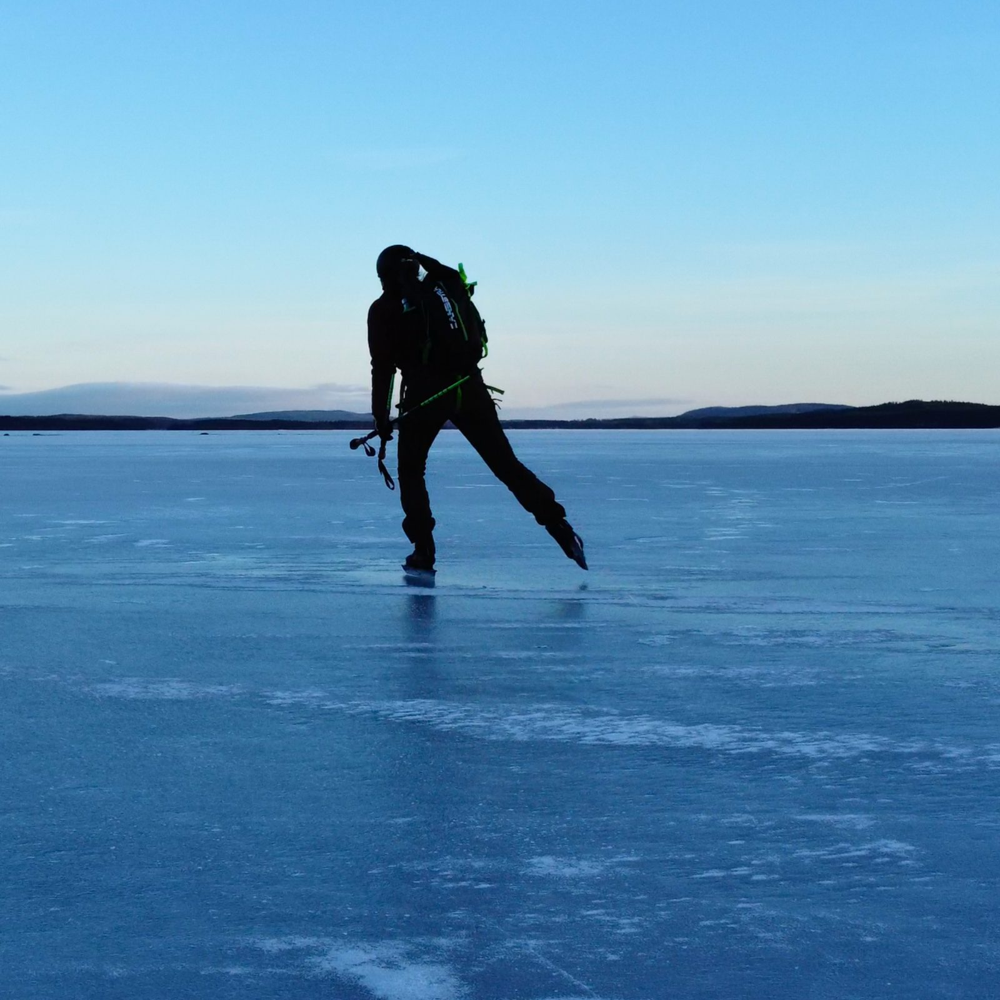
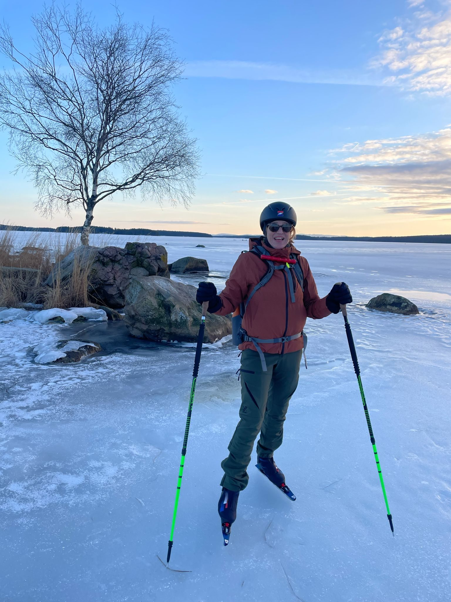

Ankunft
Du kommst bei der Unterkunft in Falun an. Zeit, deine Ausrüstung bereitzulegen und das Eis schon mal zu begutachten.

Schlittschuhlaufen auf historischem Eis in Dalarna, mit den charakteristischen roten Minengebäuden von Falun im Hintergrund.


Schlittschuhlaufen über einen See, an dem seit Jahrhunderten gearbeitet und gelebt wird.
Falun liegt in Dalarna, genau wie Orsa, am Nordufer des Runn - dem großen See dieser Gegend. Die Stadt verdankt ihren Namen dem Kupferabbau, der dort jahrhundertelang stattfand - daher die roten Minengebäude, die du vom Eis aus liegen siehst.
Was du genau fährst, steht nie im Voraus fest. Du läufst selbstständig, und Natureis lässt sich nicht planen: Das Wetter und die Eisqualität bestimmen jeden Tag, wo du Schlittschuh laufen kannst.
Du buchst Falun als Komplettpaket: Flug, Mietwagen und Unterkunft sind geregelt, und du wählst selbst, wann du fährst.
Genau wie bei Orsa wohnst du in eigenen Hütten dicht am Eis, sodass ihr abends zusammensitzt und morgens direkt nach draußen geht.








Falun ist eine Pauschalreise, die du selbst zusammenstellst: Du wählst deinen Ankunftstag und wie lange du bleibst, ab 4 Tagen. Flug, Mietwagen und Unterkunft sind inbegriffen. Buchst du den Flug oder den Transport lieber selbst, klickst du das weg und der Betrag wird vom Preis abgezogen.
Du wählst deinen Ankunftstag und bleibst mindestens 4 Tage.
Du stellst die Reise zusammen und bezahlst gleich online.
Standardmäßig kommt keine Begleitung mit und du teilst deine Tage selbst ein. Zwischen dem 10. Januar und dem 20. Februar kannst du Begleitung auf dem Eis dazubuchen.
Die Reihenfolge steht fest, die Inhalte nicht. Wo du Schlittschuh läufst, entscheidest du jeden Tag neu, je nach Wetter und Eis.
Du kommst bei der Unterkunft in Falun an. Zeit, deine Ausrüstung bereitzulegen und das Eis schon mal zu begutachten.
Ruhiger Start auf der gefegten Bahn, damit du dich an das Natureis und die Schlittschuhe gewöhnst.

Jeden Morgen schaust du nach dem Wetter und der Eisqualität und entscheidest, wohin es geht. Manchmal ist das die lange Bahn über den See, manchmal weichst du auf anderes Eis in der Umgebung aus.

Je nach Abreisezeit ist morgens oft noch Zeit für eine letzte Runde über das Eis, bevor du losfährst.
Die genaue Anzahl der Tage hängt vom Reisetermin ab. Sobald der feststeht, passt sich das Programm daran an.
Bist du unsicher, ob etwas enthalten ist? Frag einfach nach, dann weißt du es sicher.
Falun liegt am Runn, dem großen See Dalarnas. Wo wir genau Schlittschuh laufen, steht nie vorab fest: Wir schauen jeden Morgen nach dem Wetter und der Eisqualität und weichen bei Bedarf auf anderes Eis in der Umgebung aus.
Standardmäßig nicht: Falun ist eine Pauschalreise, die du selbst buchst, ohne Begleitung auf dem Eis. Der Flug, der Mietwagen und die Unterkunft sind inbegriffen, mit Online-Service vorab. Das setzt voraus, dass du selbst einschätzen kannst, ob das Eis sicher ist. Möchtest du nicht allein aufs Eis, kannst du zwischen dem 10. Januar und dem 20. Februar Begleitung auf dem Eis dazubuchen: €100 pro Tag für 1 Person, + €50 pro Tag für jede weitere Person, für so viele Tage, wie du möchtest. Begleitete Gruppenreisen werden noch geplant.
Inbegriffen sind der Flug nach Schweden, der Mietwagen vor Ort, die Unterkunft in den Hütten und der Online-Service vorab. Nicht inbegriffen sind deine eigene Schlittschuhausrüstung und Winterkleidung, die vorgeschriebene Sicherheitsausrüstung (Eiskrallen und Helm), Essen und Trinken sowie Versicherungen. Buchst du den Flug oder den Mietwagen lieber selbst, wird dieser Betrag vom Preis abgezogen.
Die Schlittschuhreise nach Falun kostet ab €995 pro Person für 4 Tage. Du wählst selbst, wann du reist: Im Kalender auf dieser Seite legst du deinen Ankunfts- und Abreisetag fest, zwischen dem 19. Dezember 2026 und dem 14. März 2027. Du reist mindestens 4 Tage, und welche Tage noch frei sind, siehst du im Kalender. Im Dezember ist das Eis noch am unsichersten. Du buchst und bezahlst direkt online.
Du musst kein Wettkampfläufer sein, aber du solltest selbstständig und kontrolliert Schlittschuh laufen können. Bist du dir über dein Niveau unsicher, denkt Joey vorab mit dir mit.
Das bestimmst du selbst: Du läufst selbstständig und teilst deine Tage selbst ein. Wie viel es wird, hängt auch vom Eis und vom Wetter des Tages ab.
Falun ist ein guter erster Kontakt mit skandinavischem Natureis, gerade weil der Flug, der Mietwagen und die Unterkunft schon geregelt sind. Standardmäßig läufst du dort selbstständig Schlittschuh; das setzt voraus, dass du selbst einschätzen kannst, ob das Eis sicher ist. Zwischen dem 10. Januar und dem 20. Februar kannst du Begleitung auf dem Eis dazubuchen. Es bleibt aber Natureis: gute Vorbereitung gehört dazu.
Natureis lässt sich nicht garantieren. Das Wetter und die Eisqualität bestimmen jeden Tag, wo du Schlittschuh laufen kannst. Wo nötig weichst du auf einen anderen geeigneten See in der Umgebung aus.
Du bringst deine eigene Schlittschuhausrüstung und Winterkleidung mit. Für Natureis empfehlen wir Langlaufschlittschuhe; deine Kleidung muss geeignet sein, um einen ganzen Tag draußen zu sein. Eiskrallen und ein Helm sind Pflicht.
Ja. Die Schlittschuhtouren hängen immer vom Wetter und von der Qualität des Eises ab. Schau dir deshalb jeden Tag neu die Bedingungen an und passe deine Route daran an. Kein Tag steht vorab ganz fest.
Der Preis beginnt bei €995 pro Person für 4 Tage zu zweit. Flug, Mietwagen und Unterkunft sind inbegriffen. Buchst du den Flug oder den Transport selbst, wird das vom Betrag abgezogen.
Sobald der Kalender geladen ist, wählst du hier deinen Ankunftstag. Klappt das nicht, schreib an schaatsennovakse@outlook.com.
Orsa und Finnland sind, genau wie Falun, selbstständige Reisen. Bei Orsa kannst du ebenfalls Begleitung auf dem Eis dazubuchen. Begleitete Gruppenreisen werden noch geplant.